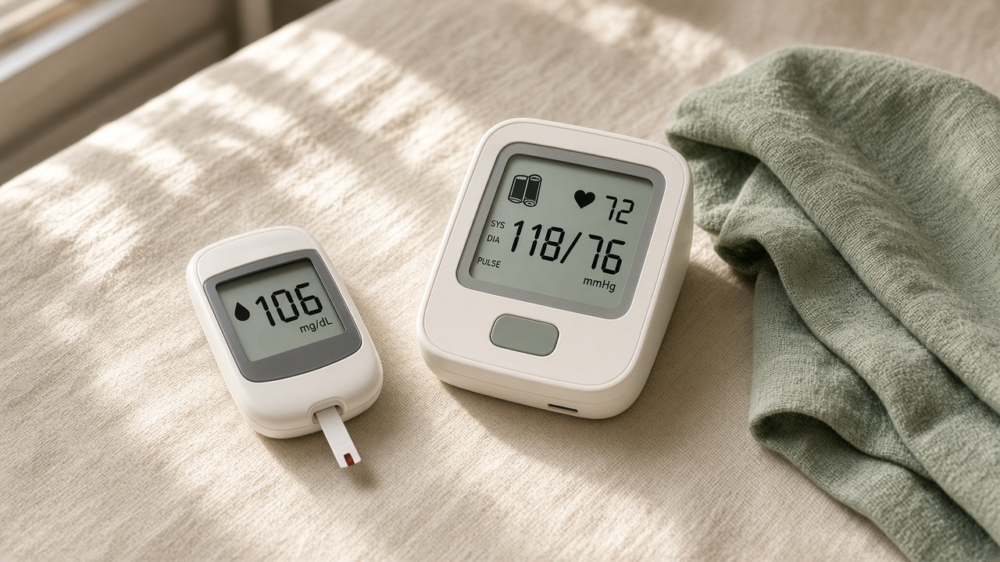

01
Record
Glucose, pressure, medicines, and the next visit live on the chart.
Type 2 diabetes and hypertension
Care Loop keeps the record in the patient’s language, and asks only when a dose or a reading is still missing.
Synthetic demo. Not medical advice.
Glucose, pressure, medicines, and the next visit live on the chart.
She confirms a dose with I’ve taken it, or leaves it not taken.
A miss is not counted as taken. That is what queues the check-in.
The call does not change a dose. The chart does.
| Surface | What it holds | What the person does |
|---|---|---|
| Today | Latest sugar, pressure, adherence, next visit | Reads the demo day |
| Glucose | mg/dL, time, context, source | Keeps fasting separate |
| Blood pressure | mmHg, time, source, optional pulse | Keeps home and clinic labeled |
| Medicines | Schedule and taken or not taken | A miss queues a check-in |
| Calendar | Visits, labs, and dose times | Sees the week |
| Companion | Language and queued check-ins | Takes the call |
| Data sources | Synthetic, manual, device | Sees where a row came from |
| Demo | Scripted scenarios for the clinic | The operator starts it |
Demo chart. The evening metformin slot is still unrecorded.
| When | Measure | Value | Context | Source |
|---|---|---|---|---|
| 15 Nov, 7:20 am | Glucose | 125 mg/dL | Fasting | Glucometer |
| 15 Nov, 8:10 am | Blood pressure | 126/80 | Pulse 71 | Home monitor |
| 14 Nov | Glucose | — | Fasting | Not recorded |
| 13 Nov, 8:12 am | Blood pressure | 136/88 | Pulse 72 | Home monitor |
A missing fasting day is a gap in the record. It is not a diagnosis.
| Medicine | When | Status |
|---|---|---|
| Metformin 500 mg | 8:00 am | Taken |
| Telmisartan 40 mg | 8:00 am | Taken |
| Metformin 500 mg | 8:00 pm | Not taken |
8:00 pm · Metformin
Not recorded as taken.
Missed on the dashboard, so a check-in is queued.
CareLoop calls about medicines, sugar checks, and the next visit.
| Language | Use |
|---|---|
| Hindi | Preferred for the demo profile |
| English | Available for the check-in |
| Tamil | Available for the check-in |
| Kannada | Available for the check-in |
| Label | Meaning |
|---|---|
| Synthetic | Demo chart data, not a device |
| Manual | Entered by a person |
| Device | Reported by a connector such as Nightscout |

If the API is down, the page shows a fixture preview. A fixture is not a live sensor.
Calendar
Consultations, laboratory visits, and the dose times already on the schedule.
Reports
Synthetic prescription and lab file names. Previews are not stored charts.
Profile
Name, conditions, language, and the phones the call may use.
Clinic demo
The operator starts a scripted scenario. The patient does not press start.
| Piece | Job | Does not |
|---|---|---|
| Patient app | Shows the chart and the dose marks | Invent a reading |
| Flask | Writes readings and the call context | Diagnose |
| Postgres | Holds the clinical record | Place the call |
| Intelligence | Names gaps and priorities | Change a medicine |
| Bolna | Places and understands the check-in | Become the chart |
The rule
Taken is recorded. Not taken is missed. The dashboard leaves it out of the taken count, and the companion queues the check-in.
Synthetic demo data. Not medical advice. This deck does not place a phone call.